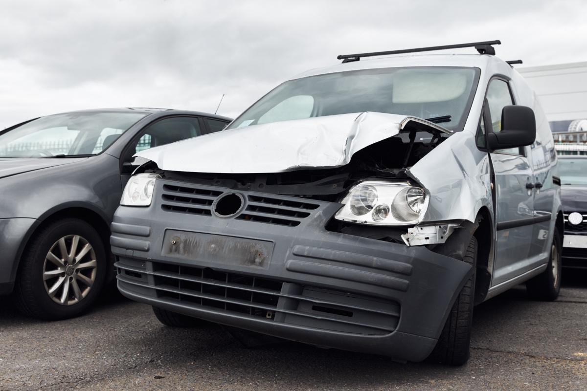

Free estimate
Call us or request one online. We'll arrange to assess the damage and give you a detailed estimate, not a vague ballpark.
Staging build. Not the live site. The shop's live site is at tricountycollision.com

Southampton, PA
When your personal car gets damaged, it's a headache. When a work vehicle gets damaged, it's a hole in your schedule, your payroll, and your bottom line.
Every day a van sits in a shop is a day it isn't earning.
At Tri-County Collision, we've built our commercial collision repair services around that simple reality. We're a family-owned shop at 995 Jaymor Rd in Southampton, and businesses across Bucks and Montgomery County trust us to repair their vehicles properly and return them quickly. Whether that's one delivery van or a lineup of tractor-trailers.


No business is too small for us, and no fleet is too large. Our certified technicians bring years of experience across the full range of working vehicles, including:
If it works for a living, chances are we've repaired one like it. And because we're factory-certified for 12 vehicle brands (including Ford, GM, Dodge, and Chrysler), the cars, vans, and pickups in your fleet can be repaired to manufacturer standards without leaving Southampton.
Time is money. Yours especially. Here's how a commercial repair works at Tri-County Collision:
Call us or request one online. We'll arrange to assess the damage and give you a detailed estimate, not a vague ballpark.
We work with all major insurance companies and handle the claims paperwork, so you can stay focused on running your business.
Before work begins, we map out exactly what the vehicle needs so there are no surprises mid-repair.
Our technicians bring your vehicle back to pre-accident condition using top-quality parts and the right equipment for the job.
Every repair is inspected before we call it done, and your vehicle is detailed inside and out.
You get updates throughout the process, so there's no guessing about when your vehicle returns to service.
The repair bill is only part of what a commercial accident costs. Missed deliveries, rescheduled jobs, idle drivers: that's the damage that never shows up on an estimate. It's why we work quickly to assess your vehicle and start repairs without unnecessary delays. And it's why we keep you informed at every stage. Our team is available to answer questions and give you status updates, so you can plan your week around real information instead of guesswork.
Fast never means careless, though. Every vehicle leaves our shop in pre-accident condition, backed by our lifetime warranty on repair work.
Commercial insurance claims can get complicated, and complicated is the last thing you need in the middle of a workweek. We deal with all the major insurance carriers and manage the claims process directly. The paperwork, the adjuster conversations, the documentation.
One more thing worth knowing: under Pennsylvania law, the choice of repair shop belongs to you, not your insurer. If an adjuster suggests sending your vehicle somewhere else, that decision is still yours to make.
From contractors in Warminster to delivery services in Bensalem, businesses throughout the region rely on Tri-County Collision for commercial collision repair. We serve Southampton, Feasterville-Trevose, Huntingdon Valley, Willow Grove, Horsham, Hatboro, Richboro, Langhorne, Warrington, Doylestown, Newtown, Churchville, Jenkintown, Northeast Philadelphia, and the surrounding communities.
Estimates are free and there is no obligation
We repair just about all types of commercial vehicles. Our technicians have years of experience with delivery vans, box trucks, tractor-trailers, buses, and most working vehicles on the road. If you're not sure whether we can handle a particular vehicle, call us at (215) 322-5350 and ask.
How long your work vehicle will be in the shop depends on the damage, and we won't pretend otherwise. What we can promise: a detailed estimate up front, efficient work once repairs begin, and regular updates so you're never left wondering. Limiting your downtime is a priority on every commercial job.
Yes, we work with commercial insurance policies. We work with all major insurance companies and handle the claims process from start to finish, including the paperwork. You have enough on your plate keeping the rest of your fleet moving.
Yes, we can repair multiple vehicles from the same fleet. We work with businesses of every size. A contractor with one cargo van, a company running dozens of tractor-trailers, and everyone in between. Tell us what you're dealing with, and we'll work out a plan with you.
Pre-accident condition is the standard. We repair with top-quality parts, inspect every job before release, and back our repair work with a lifetime warranty. Your vehicle represents your business on the road; it should look the part.
To get a commercial repair estimate, call (215) 322-5350 or request an estimate online. Estimates are free, and there's no obligation.